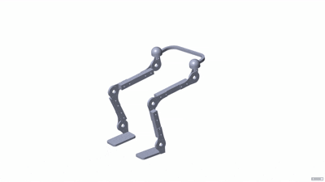
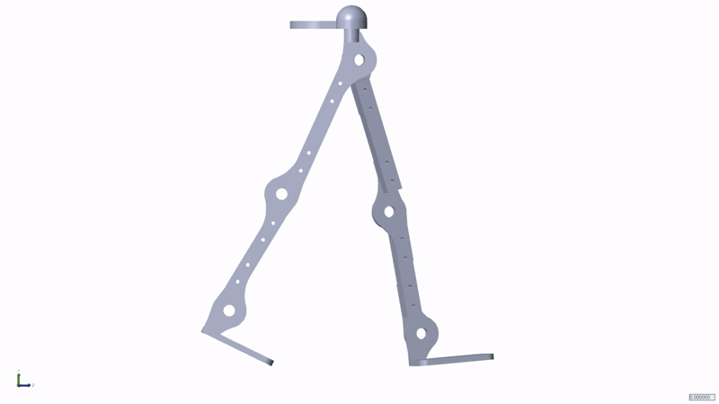

Lower-limb exoskeletons for healthy elderly users must track
sit-to-stand and walking-gait trajectories under changing
loads. Fixed-gain controllers degrade across motion phases,
so this thesis adds an RL supervisory gain scheduler to a
model-free adaptive controller with online RBF estimation.
Lower-Limb ExoskeletonDeep RL-MFACRL Gain SchedulingRBF Neural EstimatorSimscape MultibodyOpenSim
0.078°avg STS tracking error — 60% below PID
0.32° / 0.24°avg gait error, right / left leg — up to 85% below
PID
−79%max error cut from RL scheduling alone
12 Nmmid-motion torque hits absorbed
How It Works
The bilateral 8-DOF lower-limb exoskeleton: hip rotation,
hip flexion, knee, and ankle joints per leg.

Sit-to-stand animation (MATLAB/Simscape).

Walking gait animation (MATLAB/Simscape).
The control loop: RL retunes the backstepping gains as
loading changes across motion phases.
Estimate the unknown. A second-order
ultra-local model lumps inertia, gravity, Coriolis
effects, and disturbances into one term, estimated online
by a per-joint Gaussian RBF network — no explicit system
identification needed.
Track robustly. A Lyapunov-based
backstepping law with a robust auxiliary term converts the
estimate into smooth torque commands within joint limits.
Adapt the gains. An RL agent observes
tracking errors, joint states, and movement phase, and
scales the backstepping gains within [0.5, 1.5] as loading
changes across phases.
Validated in MATLAB/Simulink + Simscape Multibody against
OpenSim reference trajectories, and benchmarked against PID,
LQR, SMC, and conventional MFAC under identical settings.
Full derivations are in Chapter 5 of the thesis.
Results
Takeaway: the proposed controller posts the
lowest average tracking error on both tasks — 0.078° on
sit-to-stand and 0.315° / 0.241° on right / left-leg gait.
Average tracking RMSE by controller
Lower is better; the proposed controller is highlighted.
Sit-to-Stand
Walking Gait
Averages computed from per-joint Tables 6.2 (STS) and 6.5
(right-leg gait). Hover any bar for exact values.
What RL supervision adds
RMSE reduction per joint versus the same controller without
RL gain scheduling (Table 6.3).
MAE gains reach 75.14% at the ankle. Trade-off: peak error
rises at hip and knee, since the reward optimizes cumulative
tracking and effort rather than peak deviations.
Walking gait — RMSE cut per joint
Right and left legs versus the same controller without RL
(Tables 6.7–6.8).
Same accuracy, far less effort
Summed RMS actuator torque across hip, knee, and ankle
during sit-to-stand. Lower is better.
Sum of per-joint RMS torques (Table 6.2). The proposed
controller is lowest at every joint.
Conclusions
Key findings
Lowest average error on both tasks: 0.078° (STS) and
0.315° / 0.241° (gait), with the largest gains where
loading varies most across the cycle.
Phase-aware RL gain scheduling beats fixed gains on every
actuated joint — the core claim, validated twice over.
High accuracy comes with lower, smoother torque than all
benchmarks, and survives 12 Nm external hits.
One architecture covers two distinct locomotion tasks, and
the co-simulation setup is reusable for future designs.
What is next
Hardware trials to capture actuator dynamics, sensor
noise, and real human-robot interaction forces.
Motion-capture references from a larger, diverse elderly
population, including asymmetric movement.
Intent signals (EMG, ground reaction forces), online
adaptation, and more tasks: stairs, slopes, stand-to-sit.
Publications
Conference
A Novel Hybrid Controller for Sit-to-Stand Assistance using
a Simscape Model based Lower-Limb Exoskeleton
R. Kumbhar, R. Singh, A. M. Gadade, A. Singla, I. Hussain ·
Proc. Int. Conf. Modelling, Identification and Control
(ICMIC), 2026 (Accepted)